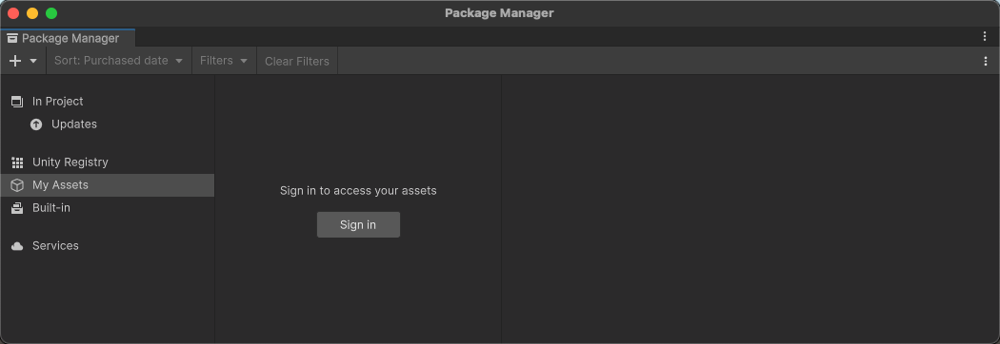
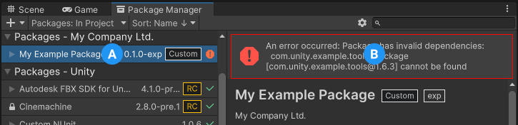
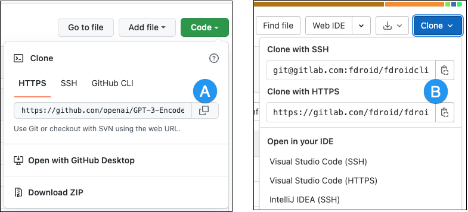

Asset packagesA collection of files and data from Unity projects, or elements of projects, which are compressed and stored in one file, similar to Zip files, with the .unitypackage extension. Asset packages are a handy way of sharing and re-using Unity projects and collections of assets. More info See in Glossary from Asset StoreA growing library of free and commercial assets created by Unity and members of the community. Offers a wide variety of assets, from textures, models and animations to whole project examples, tutorials and Editor extensions. More info See in Glossary (My Assets)
You can also run the Unity Package Manager Diagnostics tool if you are experiencing problems that might be network-related. For more information, refer to Diagnose network issues.
Error messages in the Package Manager window
The Package Manager displays error indicators in the Package Manager window when it encounters problems.
System-wide issues
Network connection issues
Error messages appear in the status bar when the Package Manager has detected an issue that isn’t related to a specific package. For example, if the Package Manager can’t access the package registry server, it displays this message in the status bar:
If your network can’t reach the package registry server, it’s probably because there is a connection problem with the network. When you or your system administrator diagnose and fix the network error, the status bar clears.
If your network connection is working, but you aren’t signed into your Unity account, the Package Manager doesn’t display any Asset Store packages. When you try to use the My Assets context, the Package Manager prompts you to sign in:

Logged out of Unity account
Click the Sign in button inside the list panel to sign into your Unity account through the Unity Hub.
Package-specific issues
If a specific package has a problem when loading or installing (for example, when determining which package versions to load), the error icon () appears in the list panel next to the compromised package (A). To find out what the problem is, check the compromised package’s details panel to view the detailed error message (B):

Dependency error message
Package Manager missing or window doesn’t open
The Package Manager window might get moved offscreen or hidden by another window. When this happens, it looks like the Package Manager window failed to open. In this case, you can try to reset the window layout (Window > Layouts > Default) and reopen the Package Manager window again.
If the Package Manager window still doesn’t appear, check your Unity Console windowA Unity Editor window that shows errors, warnings and other messages generated by Unity, or your own scripts. More info See in Glossary:
Failed to resolve packages: The file [<project-path>/Packages/manifest.json] is not valid JSON:
Unexpected token '}' at 44:1
}
This error message indicates a malformed manifest.json file. It also tells you the line number where the Package Manager failed to parse the file, so you can fix the JSON. There are several online validators that you can use to try to correct the problem. Once you save the corrected file, Unity reloads the Package Manager window.
If you upgraded from an earlier version of the Unity Editor, there might be other problems with your package manifestEach package has a manifest, which provides information about the package to the Package Manager. The manifest contains information such as the name of the package, its version, a description for users, dependencies on other packages (if any), and other details. More info See in Glossary file:
As of 2019.3, your manifest.json file shouldn’t contain any references to the com.unity.package-manager-ui package. Remove the following line from the manifest’s dependencies list:
"com.unity.package-manager-ui": "2.1.1",
Check if your project manifestEach Unity project has a project manifest, which acts as an entry point for the Package Manager. This file must be available in the <project>/Packages directory. The Package Manager uses it to configure many things, including a list of dependencies for that project, as well as any package repository to query for packages. More info See in Glossary uses “exclude” as a package version. This is an obsolete value for the dependencies property. If you find any lines like these, remove the entire line. Package Manager only installs packages that are explicitly included as a dependency in your project, so once you remove that entry, Package Manager ignores the package and doesn’t install it.
Problems after upgrading Unity to new version
When you upgrade a project to a newer Unity version, the Package Manager automatically updates incompatible packages to newer compatible versions. However, if your package doesn’t compile, the Package Manager displays error messages in the Console window.
To correct these messages, read the error messages and fix any problems you can. For example, a package might be missing a dependency on another package or version. In that case, you can try and install the package yourself.
You can also try the following sequence of solutions until you find something that works:
Back up and then delete the Packages folder under your project.
Back up and then delete the package sources in your project’s Packages folder, leaving only the manifest.json file. Then try to reload the project.
Create a new empty project. If the Package Manager window loads without errors, replace the Library/PackageCache/com.unity.package-manager-ui@<version> folder in the failing project with the same folder from the newly created project.
Package installation fails
If you are trying to install a new package from the registry and it’s not working, it might be due to permission problems.
You must have full permissions on the cache folder:
Windows (user account): %LOCALAPPDATA%\Unity\cache\upm
Windows (system account): %ALLUSERSPROFILE%\Unity\cache\upm
macOS: $HOME/Library/Caches/Unity/upm
Linux: $HOME/.cache/Unity/upm
It might be a problem with the network. Check your firewall and proxy settings.
Sometimes institutional environments, such as schools, government offices, or network-protected workplaces set up proxy servers to control traffic between the network and the Internet, and use their own server certificates which aren’t recognized by Unity or the Package Manager. Talk to your network administrator.
This message can appear when you fetch a Unity package from a scoped registry. Unity signs packages that it creates, except for older packages, which aren’t necessarily re-signed in later releases. If you copy an unsigned Unity package from a scoped registry to another registry, Package Manager can’t determine if the package content is safe and identical to the original package.
If you get this message, try these solutions:
Use another version of the package.
Fetch the Unity package from the Unity Registry.
If you own the scoped registry, make sure you copy the newest version of the package from the Unity Registry.
Package version doesn’t have a valid signature
Packages have a signature to ensure that the content wasn’t changed before or during transit. An invalid signature typically occurs in the following situations:
Someone published the package with modifications on their own registry.
An error occurred while transferring the file to the end user.
In both cases, Package Manager considers the package to be potentially malicious.
When you get an invalid signature, you can try to install a different version of the package. Also, avoid using Unity packages from a registry other than the Unity Registry.
If you are sharing a Unity package that has a fix, consider using a Git URL or embedding the package in your project.
No ‘git’ executable was found
If you try to install a package from a git URL, a message similar to this appears:
Cannot perform upm operation: Unable to add package
[https://github.example.com/myuser/myrepository.git]:
No 'git' executable was found. Please install Git on your system and restart Unity [NotFound]
UnityEditor.EditorApplication:Internal_CallUpdateFunctions()
git-lfs: command not found
If you are trying to download a package that uses Git LFS (Large File Storage), you might get this error message:
Error when executing git command. git-lfs filter-process: command not found.
This indicates that Git LFS is probably not installed on your computer. To make sure, test it on the command line:
git lfs --version
Git LFS is installed if the command returns something like this:
git-lfs/2.8.0 (GitHub; darwin amd64; go 1.12.7)
Otherwise, you can install it by following the BitbucketGitHub instructions.
Repository not found
If you specify a location that doesn’t exist, a message similar to this one appears in the Unity Console:
Cannot perform upm operation: Unable to add package [https://mycompany.github.com/gitproject/com.mycompany.mypackage.git]:
Error when executing git command. fatal: repository 'https://mycompany.github.com/gitproject/com.mycompany.mypackage.git/' not found
[NotFound]
UnityEditor.EditorApplication:Internal_CallUpdateFunctions() (at /Users/builduser/buildslave/unity/build/Editor/Mono/EditorApplication.cs:310)
Check your spelling. To make sure you are using the correct URL, go to the repository’s page and copy the URL from the Clone button:

Where to copy the URL on GitHub (A) and GitLab (B)
Click the button to the right of the URL on GitHub (A) or GitLab (B) to copy the URL to your clipboard.
If the location of the repository is correct, there may be another problem with the URL:
If you are targeting a specific revision, make sure your revision comes last. For example: https://github.example.com/myuser/myrepository1.git#revision
If you are targeting a revision and the package isn’t at the root, make sure the path query parameter precedes the revision anchor. For example: https://github.example.com/myuser/myrepository.git?path=/example/folder#v1.2.3
Could not read Username: terminal prompts disabled
If you are trying to install a package from a private repository that requires authentication, a message similar to this one appears in the Unity Console:
Cannot perform upm operation: Unable to add package [https://mycompany.github.com/gitproject/com.mycompany.mypackage.git]:
Error when executing git command. fatal: could not read Username for 'https://mycompany.github.com': terminal prompts disabled
[NotFound]
UnityEditor.EditorApplication:Internal_CallUpdateFunctions() (at /Users/builduser/buildslave/unity/build/Editor/Mono/EditorApplication.cs:310)
Usually, this message appears because Package Manager doesn’t provide an interactive terminal or dialog where you can enter your username and password for HTTP, or your passphrase to unlock your SSH key:
With HTTP(S), every time you log onto Bitbucket, GitHub, or GitLab you need to enter your username and password in a terminal or a dialog. However, the Package Manager doesn’t provide an interactive terminal or dialog where you can enter your username and password for HTTP(S).
To bypass this, use one of the workarounds suggested in Solutions for HTTPS.
SSH uses a pair of public and private SSH keys. You can add your public SSH key to Bitbucket, GitHub, or GitLab and then access repositories without having to enter a username and password.
However, if you have set up a passphrase to keep your SSH key safe, you still have to enter that passphrase in a terminal or a dialog to authorize your key. In that case, you can use an SSH agent that can unlock your SSH key to authenticate with the Package Manager on your behalf.
Solutions for HTTPS
The Package Manager doesn’t provide an interactive terminal or dialog where you can enter your HTTP(S) username and password. To bypass this, use one of these workarounds:
Use git-credentials from a terminal or command prompt, then launch the Hub from the same terminal so that Unity has access to the cached or stored credentials.
Use SSH to authenticate instead. If you set up your SSH key without a passphrase, the Package Manager doesn’t have to decrypt it to authenticate with the Git server. If you decide to use a passphrase for added security, you can use the ssh-agent on either macOS or Windows to get around the authentication problem.
Solutions for SSH
If you use the SSH protocol to install a package by Git URL, you might get an authentication error from Git. This typically happens when you set up a private SSH key on your local computer that you protected with a passphrase.
The solution to this problem is to set up an SSH agent that can unlock your SSH key to authenticate with the Package Manager on your behalf. Follow the instructions in the section that corresponds to your operating system:
The built-in Windows OpenSSH version of the ssh-agent works better than the version available by default with Git for Windows. This procedure explains how to set up the OpenSSH client and add your key to its ssh-agent. If you are using Git for Windows, you can also prioritize the built-in Windows OpenSSH over the Git for Windows SSH agent:
Make sure the OpenSSH Client is installed. To do this, search for it in the Windows Settings Optional features window (Start > Settings, then search for “Optional features”). This applies to Windows 10+.
Check your %PATH% environment variable to make sure the built-in Windows OpenSSH location appears (for example, C:\WINDOWS\System32\OpenSSH\).
Note: If you’re already using Git for Windows, make sure the built-in Windows OpenSSH location appears before the Git for Windows SSH location in your %PATH% variable. This ensures that Windows uses the built-in Windows OpenSSH agent over the Git for Windows SSH agent.
In a PowerShell terminal, start the ssh-agent process and make sure it starts automatically:
# Set the ssh-agent service to start automatically and manually start it now
Get-Service ssh-agent | Set-Service -StartupType Automatic
# Run the ssh-agent process to start the ssh-agent service
ssh-agent
Import your key into the ssh-agent. To do this, run ssh-add on the command line and then follow the instructions. By default, the agent adds the %USERPROFILE%\.ssh\id_rsa key and prompts you for the password.
# Import the key
ssh-add
To use a different key, you can specify it as an argument:
# Set the ssh-agent service to start automatically and manually start it now
ssh-add <your-secure-ssh-key-name>
If you can’t remember the name of your key, use the following command to list your keys:
ssh-add -l
If you installed Git for Windows, reset the %GIT-SSH% environment variable to make sure that Git always uses the built-in Windows OpenSSH version of the ssh-agent:
Use the ssh-add command to add your SSH keys to the ssh-agent running on your macOS system. The command parameter you use depends on your version of macOS:
After you run this command, the terminal asks for the password to unlock your SSH key and then adds it to the macOS keychain. However, once you restart your system, every key stored in the ssh-agent is reset.
To make sure you don’t need to re-enter your password after you restart your system, open the ~/.ssh/config file (or create one if you don’t find it), and add the following:
If you’re trying to update your Git dependencyThe Package Manager retrieves Git dependencies from a Git repository directly rather than from a package registry. Git dependencies use a Git URL reference instead of a version, and there’s no guarantee about the package quality, stability, validity, or even whether the version stated in its package.json file respects Semantic Versioning rules with regards to officially published releases of this package. More info See in Glossary to a newer version from the repository, but it’s not working, it’s probably because of a locked Git dependency. If you want to update your Git dependency to a newer version from the repository, use the Add package from Git URL button and enter a Git URL. For more information, refer to Locked Git dependencies.
‘Failed to parse http response’ in My Assets context
If you get the following message in the Console window when you try to download an asset package from the Asset Store, there might be a problem with your asset package cache:
[PackageManager] Error Failed to parse response. UnityEditor.AsyncHTTPClientone(State, Int32)
Warning: If your project has a lot of asset data, it might take a lot of time and bandwidth to re-download everything.
Missing ‘My Registries’ in the Package Manager window
Not all registry providers are compatible with Unity’s Package Manager. If the package registry server you added doesn’t implement the /-/v1/search or /-/all endpoints, your scoped registry isn’t compatible with Unity’s Package Manager, and doesn’t appear under My Registries in the navigation panel of the Package Manager window.
Missing MonoBehaviour errors
While building, if there are a lot of errors about Missing Behavior, the UnityLinker might be mistakenly stripping out a component that it thinks is unreferenced. It often does this because the stripping level is too aggressive. For example, if you have a prefabAn asset type that allows you to store a GameObject complete with components and properties. The prefab acts as a template from which you can create new object instances in the scene. More info See in Glossary in an AssetBundle that references the SpriteShape component in the 2D SpriteShape package, the object might be missing and might generate compiler warnings.
To fix this, you can either lower the stripping level for the UnityLinker or declare the package’s assemblies inside the link.xml file to preserve them from being stripped:

 ) appears in the list panel next to the compromised package (A). To find out what the problem is, check the compromised package’s details panel to view the detailed error message (B):
) appears in the list panel next to the compromised package (A). To find out what the problem is, check the compromised package’s details panel to view the detailed error message (B):